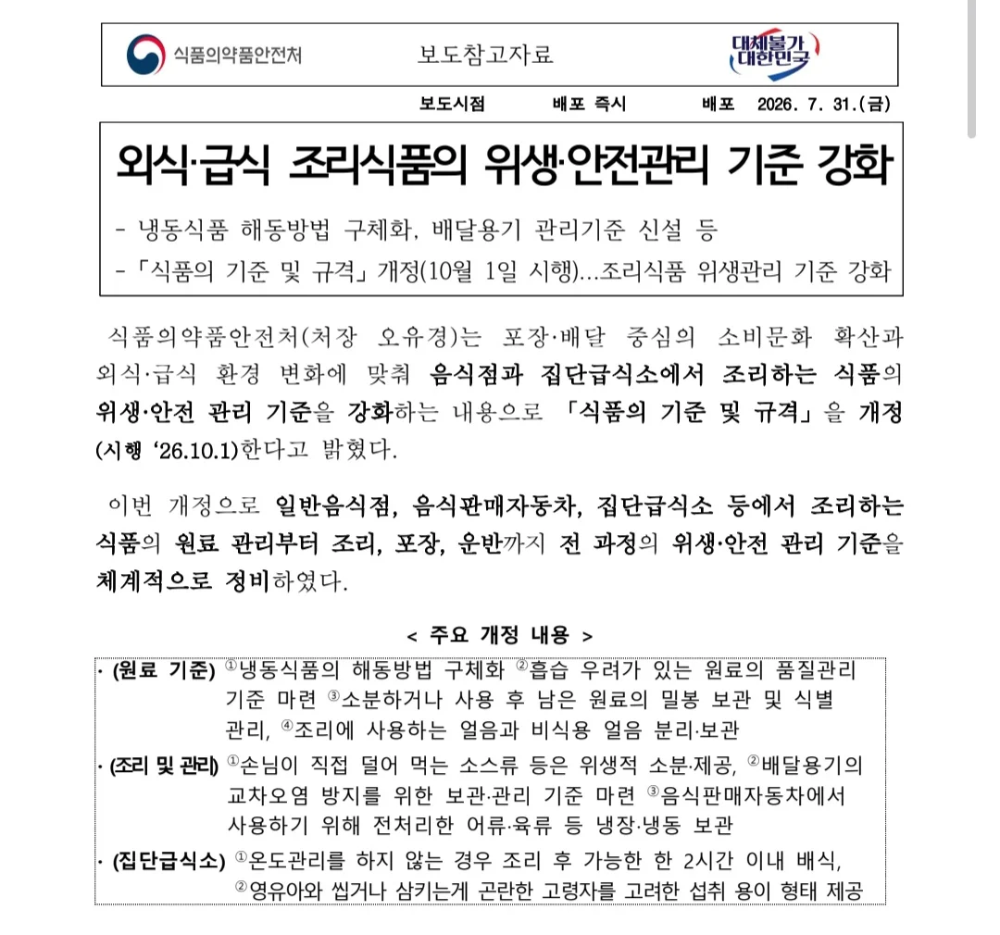

뷔페/각종 소스두는 식당은 이제 불법임

뷔페/각종 소스두는 식당은 이제 불법임
아 그래서 항상가던 국밥집이 다데기랑 새우젓 빼놨다가 요청하니까 따로준거구나...
이런것도 하나하나 다 물가상승 요인, 서빙요소가 늘어나니 장기적으로 인건비가 늘어날수밖에. 안전비용증가라 해야되나..
드럽긴한데 참.. 어렵네
미친놈들 많아서 개 존나 드러운거 맞아
난 수저통도 없앴으면 좋겠음
존나 수저 입 대는 부분 뒤적 거리는 놈들 많아
그래서 요샌 수저 젓가락 한벌씩 포장해서 제공하는 업체도 있더라구요 1~2천원 차이지만
소스배급제 ㅋㅋㅋ
얼 두끼같은 떡볶이 뷔페는 우야너
이건 해야 하는게 맞음
뚜껑 열어놓고 쓰는게 금지지 뚜껑 닫는쪽이나 짜서 쓰는 쪽은 문제 없음
뷔페 가보면 기침하는 새끼들 존나 많은데 감염 안될리가
점심 뷔페 식권 배부 땜에 강제로 다니면서 평소 안걸리던 감기를 한달에 몇번씩 걸려봄
쿠우쿠우 멸망
더럽긴한듯
전에 어떤 참치집에서 간장쓸라는데 초파리가 간장통에 수두룩하더라.
이미 다 망했는디 뭔걱졍
테이블에 소스 놓는 집들 좀 거시기 했어. 저거 언제 담아 놓은 걸까 생각들고.
더럽긴해 수저통도 좀 바꿔라.
그냥 일회용 제공하던지 ㅅㅂ
이게 진짜로 문제라 생각했으면 뷔페 자체도 제한했어야지.
소스는 위생상 문제되고, 깔아둔 음식은 문제가 안 되나?
그럼 이제 중국집에 식탁에 식초나 간장 못두는 거야???
오픈한게 아니면 괜찮음


지랄났다 ㅋㅋㅋㅋㅋㅋㅋ
지랄났네